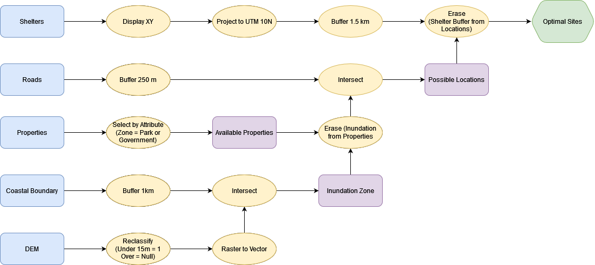

Final Exam Review
The review recording will not be available on canvas during the exam period.
The final exam will be asynchronous on canvas. You will have a 48 Hour Window to Complete (0:00 December 15th to 23:59 December 16th). unless an accommodation has already been discussed
- One Attempt - five hours
- Not intended to take five hours, I just don’t want you to feel rushed.
- If you have an accommodation for extra time, please email me a reminder to before the exam to ensure I’ve set it for your exam.
- The exam is open book - you can reference any course material or outside sources you want
- Be weary of outside materials - they may not be correct …
- DO NOT copy/paste answers. Answers must be in your own words. Plagiarism will be taken seriously and could result in a zero.
Essays (30 pts x3)
- No definitive word count/limit. Responses can be brief, but should be thorough. Use full sentences and answer all parts of the question.
- Give examples!
- Sketches/Illustrations can be incorporated (not required/expected)
- Type them up and submit as .pdf
- Make Sure it’s a .pdf!
- Formats like .pages - are not readable across platforms
- Randomly assigned from a bank!
- You can expect:
Flowchart (50 pts x1)
Tests your ability to work through a problem using GIS methods. Create a flow chart outlining a GIS analysis in response to a prompt. I suggest you use diagrams.net because its easy to create clean flowcharts quickly, but you can do it however you’d like. You might want to practice making a flowchart before exam time.
The processes you’ll want to be familiar with were covered in Module 5 & Module 6
- When exporting to submit, make sure to export/submit a .png, .jpg, or .pdf
- Think about design principals - aesthetics will be a small portion of the flowchart grade.
Practice Question 1
Prompt: Based on your analysis from the Tsunami Risk Assessment, the city of Port Alberni has been given funding build a new evacuation shelter. You have been contracted by the city and tasked with finding a suitable location for the shelter.
Criteria: The shelter must:
- Be located outside of any potential inundation zone (Elevation > 15 m or distance from coastline > 1 km).
- Be at least 1.5 km away from existing shelters.
- Located no more than 250 m away from an Arterial Roadway.
- Cannot be located on Residential, Commercial, or Industrial Parcels
Data
| Name | Type | Coordinate System | Attributes |
|---|---|---|---|
| Digital Elevation Model | Raster | UTM Zone 10N | Elevation (m) |
| BC Coastal Boundary File | Vector (line) | UTM Zone 10N | Name |
| BC Roads Layer | Vector (line) | UTM Zone 10N | Road Type (Arterial, Residential, Private), Name |
| Properties | Vector (polygon) | UTM Zone 10N | Zoning Type (Residential, Commercial, Industrial, Parks, Government/ Institutional) |
| Current Shelters | Text (.csv) | WGS 1984 | Latitude/Longitude, Name, Capacity |

Practice Question 2
Prompt: June is looking for the best places in BC to pick salmonberries and they have asked you for help!
Criteria: June will only pick on public land. Salmon berries prefer:
- Deciduous Tree Cover
- Moist forest (At least 1000 mm rainfall / year)
- Cool summers (Mean July Temperatures < 25 C)
- Lower Elevation (< 1500 m)
Data
| Name | Type | Coordinate System | Attributes |
|---|---|---|---|
| July NDVI | Raster | WGS 1984 | NDVI |
| January NDVI | Raster | WGS 1984 | NDVI |
| BC Land Tenure | Vector (Polygon) | BC Albers | First Nation/Crown/Private/ |
| July Temperature Data | Text (.csv) | WGS 1984 | Latitude/Longitude, Name, Temperature |
Suggested Steps:
- July Temperature Data » Display XY & Project (Albers) » IDW
- Both NDIV » Reproject (Albers)
- Reclassify » NDVI & Temperature
- Raster Calculator/Weighted Overlay (All Raster Layers)
- Raster to Vector (Suitable Areas)
- Select Crown Land > Clip Suitable Areas
Short Answer Questions (10 pts x6)
Generally, 1-3 sentences will suffice. Try not to write much more than a paragraph. Bullet point lists are sufficient where applicable. Anything from lecture/lab is fair game.
- Explain a key concept in your own words or give examples of a specific issue.
Remaining Questions
The exact breakdown may change slightly, but you can expect:
-
5pts x5 Fill in the blanks
-
4pts x1 Matching
-
2pts x8 Multiple Choice
-
1pt x5 True/False
Extra Credit
Write a positionality statement for your final project. (Up to 10 pts)
- See Module 6 and June’s example
Teaching Evaluations!
I value your feedback! Please if you haven’t done so already! fill them out so I can think about how to improve my teaching going forward!
- What worked for you & what didn’t?
- How was the pace & format?
- Anything I should spend more time on?
- Did you find any modules particularly difficult?
- They also help my future employment prospects :)
About Evaluations
Teaching evaluations are anonymous and not released to professors until after the final exam.
You can follow this link or scan the QR code below to go to th